Positions & pace
01
Standings
Positions, gaps, best laps, pit status and classes.
Every widget is its own window: toggle it, move it, resize it and configure it on its own. This is the whole list — 38 of them, each with a one-line description and a filter by what it is for.
38 of 38
Positions, gaps, best laps, pit status and classes.

The cars around you and live intervals to them.

A track map with every driver’s live position.
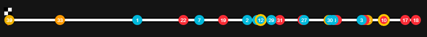
A compact, horizontal version of the map.

Track and air temperature, humidity and track state.
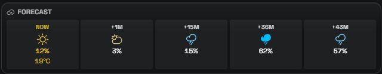
A weather forecast for the rest of the session.
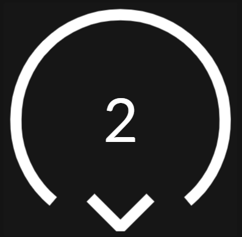
Wind direction and speed.
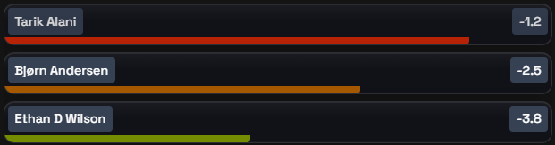
A warning about faster cars closing in from behind.

Consumption, fuel remaining, reserve and pit-stop timing.
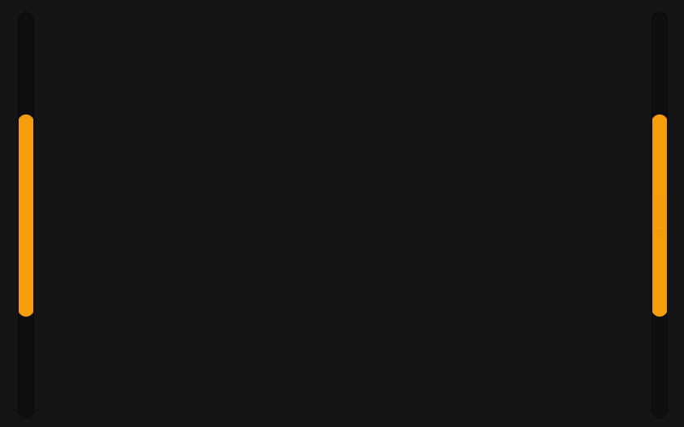
Cars in your left or right blind spot.
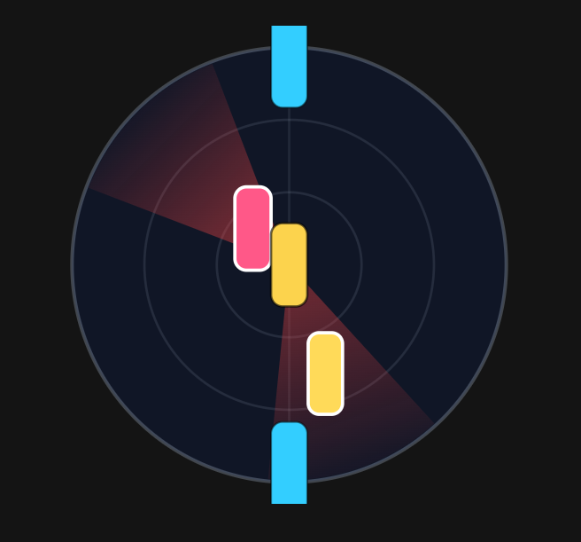
A close-range radar of the cars around you and their lanes.
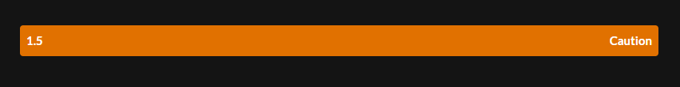
Help rejoining the track safely.
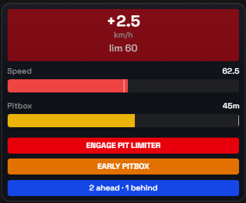
Speed, pitbox position and hints on pit entry.
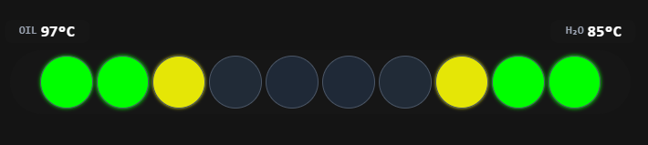
RPM, shift points and engine temperatures.
An ABS activation indicator.

The session’s current flag.
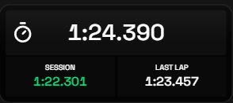
Current, best and previous laps.
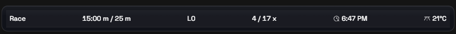
Flag, lap number and session time.
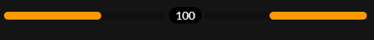
A warning about a slower car ahead.
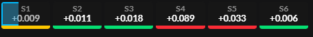
The delta for each sector.
The current corner or track section.

Throttle, brake, clutch, steering, gear and speed.
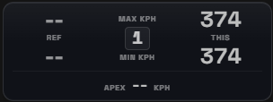
Max and apex speed through the corner against your best pass this session.
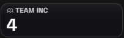
A single telemetry value of your choice; duplicate it into a row of readouts.
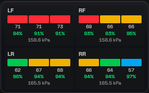
Tire temperature by zone, tread wear and cold pressure.
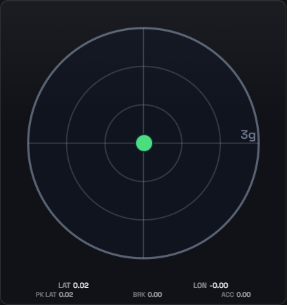
A traction circle with lateral and longitudinal load, its trail and peaks.
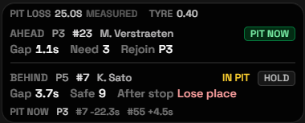
Whether pitting now beats staying out.
A compact standings table for tight layouts.
A screen cover while you’re in the garage.
A Twitch chat right on top of the simulator.
Your live heart rate via HypeRate.
A live delta to the session’s best lap, as a bar and a signed number.
A damage and mandatory-repair alert.
Live understeer or oversteer.
Live in-car adjustment positions, highlighted on every change.
Per-wheel brake circuit pressure and the real front/rear balance.
Cars you are about to catch, with closing speed.
Surface wetness on iRacing’s scale, its trend and the tyre call.
Try another word or reset the filter. If the widget you need is not on the list, tell us on Discord — the list grows on requests.
TU Overlays evolves with the community: tell us which widget you are missing and it may well ship in the next release.